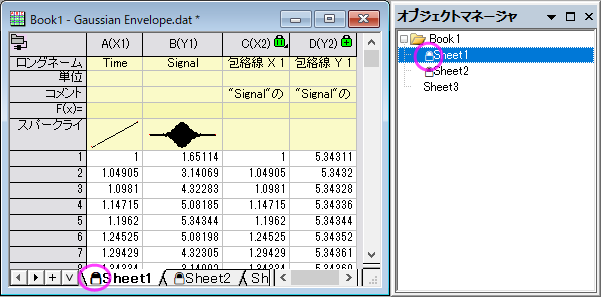
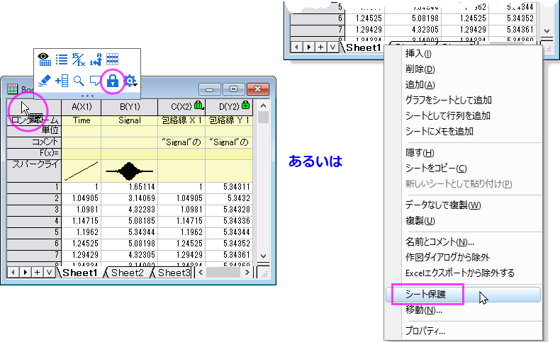
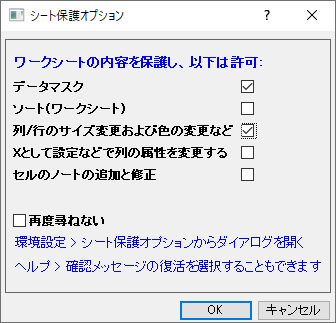

Originワークシートを保護する
WKS-Protect
Origin 2023からワークシートを保護できるようになり、誤ってセル値を上書きするといった操作からデータを守ることができます。シートを保護すると、シートタブとオブジェクトマネージャの名前の先頭に鍵のアイコンが表示されます。
- 
ワークシートを保護する
- ワークシート内の境界上でクリックしてシートレベルのミニツールバーを表示します。シート保護ボタンをクリックします。
または
- ワークシートタブ上で右クリックし、コンテキストメニューからシート保護を選択します。
- 
どちらの方法もシート保護オプションダイアログを開きます。
- 
シート保護オプション
基本的にシート保護メニューは、ワークシートの内容が変更されないようにするための機能です。しかし、シート保護オプションダイアログで例外を設定可能です。
今後、このメッセージを表示しない: このチェックボックスにチェックを付けると、以降シート保護オプションダイアログが開かずに、＜前回どおり＞の設定が使用されます。オプションを変更する方法：
- 環境設定：シート保護オプションを選択して再度ダイアログが開けます。このダイアログ絵設定を変更したあと、新しい設定を適用するには、ワークシートの保護を解除し、再度保護する必要があります。
または
- ヘルプ：リマインダメッセージを再開を選択します。次回ワークシートを保護する際は、ワークシート保護オプションダイアログが開くようになります。
または